Sistema Integrado de Pronóstico de Stock,
Control de Proveedores y Optimización Logística
El sistema integra tres módulos operativos para la gestión integral de recursos:
1. Pronóstico de Stock: Anticipa momentos críticos en la disponibilidad de bins mediante regresión lineal sobre datos históricos, proyectando la evolución de bins vacíos y llenos tanto en planta como en campos.
2. Control de Proveedores: Monitorea deuda de bins por proveedor mediante sistema de semáforo, incluyendo métricas de bins pedidos, devueltos y ritmo de devolución.
3. Optimización Logística: Analiza volumen de ingresos (kg), distribución por distancia, especies y variedades, orígenes principales, tipos de camión y segmentación de proveedores por volumen aportado.
Pronóstico de Stock
Esta sección monitorea la disponibilidad de bins vacíos en planta mediante análisis predictivo, proyectando tendencias con regresión lineal sobre los últimos 14 días de datos históricos. Visualiza la distribución total de bins (vacíos en planta, llenos en planta, en campos) y genera alertas tempranas cuando se detectan niveles críticos, permitiendo tomar decisiones correctivas con anticipación.
Cálculo de Bins - Fundamentos
Nota: Esta sección trabaja únicamente con bins del grupo J. Total disponible: 30,000 bins.
Los bins pueden estar en 3 estados: Vacíos en Planta, Llenos en Planta, y en Campo. El sistema mantiene equilibrio: la suma siempre es 30,000.
| Movimiento | Desde → Hacia | Descripción | Efecto en Estados |
|---|---|---|---|
| SALIDA | Planta → Campo | Bins vacíos salen hacia productores | ↓ Vacíos Planta ↑ Campo |
| ENTRADA (Llenos) | Campo → Planta | Bins llenos regresan con fruta | ↓ Campo ↑ Llenos Planta |
| VOLCADO (FVO) | Llenos → Vacíos | Fruta se procesa, bins quedan vacíos | ↓ Llenos Planta ↑ Vacíos Planta |
| ENTRADA (Vacíos) | Campo → Planta | Bins vacíos sin usar regresan (fin temporada) | ↓ Campo ↑ Vacíos Planta |
Cálculo de Bins - Ejemplo (Ilustrativo) Día 15→16
7 + 7 + 16 = 30 bins ✓
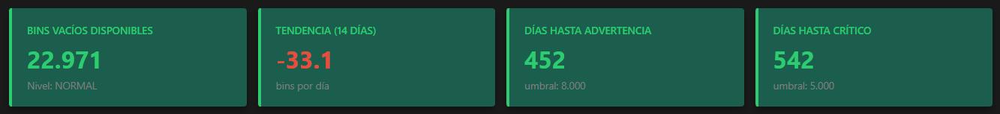
Bins Vacíos Disponibles: Se calcula restando del total (30,000) los bins en campo y los llenos en planta. Este valor indica cuántos bins están listos para ser utilizados.
Tendencia: Se analiza la evolución de los últimos 14 días mediante regresión lineal por mínimos cuadrados. Se toman los días (x = 0, 1, 2... 13) y los bins vacíos de cada día (y), ajustando estos datos a la ecuación y = mx + b, donde m es la pendiente que indica cuántos bins se pierden o ganan por día en promedio. Un valor negativo indica pérdida de bins vacíos (situación de riesgo), mientras que un valor positivo indica recuperación de stock.
Proyección de Alertas: Con la tendencia actual, el sistema calcula cuántos días faltan para alcanzar los umbrales críticos. Si la proyección indica ≤7 días hasta el umbral crítico (5,000) o ≤7 días hasta advertencia (8,000), se activa la alerta correspondiente.
Análisis del Gráfico de Áreas Apiladas
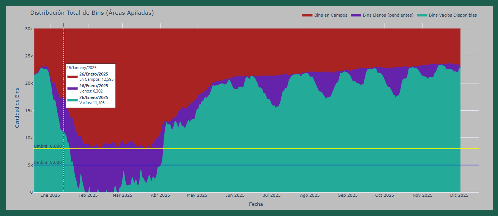
El gráfico muestra 3 áreas apiladas que suman siempre 30,000 bins:
• Área 1 (Base - Verde): Bins Vacíos en Planta
• Área 2 (Morado): Bins Llenos en Planta
• Área 3 (Rojo): Bins en Campos
• Umbral Crítico (Azul): 5,000 bins
• Umbral Advertencia (Amarillo): 8,000 bins
Gráfico de Evolución Individual por Categoría
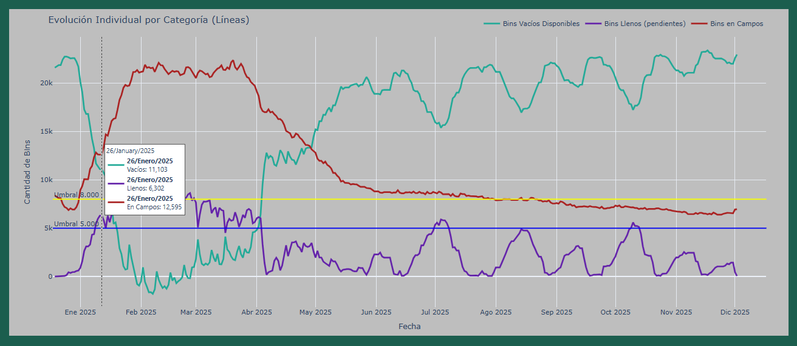
• Verde: Bins Vacíos Disponibles
• Morada: Bins Llenos pendientes
• Roja: Bins en Campos
Permite comparar tendencias individuales y diagnosticar qué variable causa cambios en el stock disponible.
Permite tomar decisiones rápidas: ver que la línea roja está alta indica necesidad de recuperar bins de campo; ver la morada alta indica acelerar el volcado de fruta.
Control de Proveedores
Esta sección monitorea la deuda de bins por proveedor mediante un sistema de semáforo automático que categoriza por niveles de riesgo (verde, amarillo, rojo) según porcentaje de retención. Calcula métricas de bins pedidos, devueltos, ritmo de devolución y días sin retorno, identificando proveedores con comportamiento crítico y permitiendo gestionar recuperación de activos de forma proactiva.
Sistema de Semáforo para Control de Proveedores
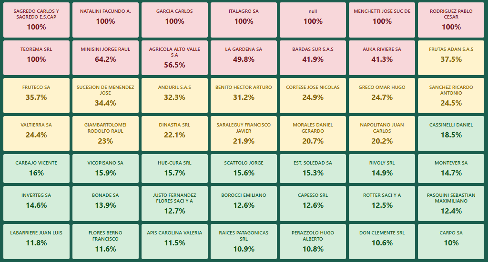
Clasifica automáticamente a cada proveedor según su porcentaje de deuda de bins, permitiendo identificar rápidamente situaciones de riesgo.
• Verde (<20%): Retorno saludable
• Amarillo (20-40%): Requiere monitoreo
• Rojo (>40%): Acción crítica necesaria
Calcula bins pedidos, devueltos, ritmo de devolución, días sin retorno, y proyecta el tiempo estimado para saldar la deuda actual.
Sistema Interactivo de Análisis por Proveedor
Los valores se actualizan al seleccionar un proveedor desde la cuadrícula o mediante el buscador por nombre/código
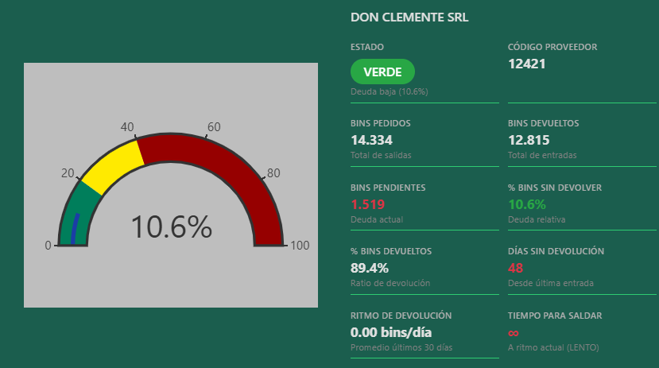
Velocímetro de 0-100% dividido en tres zonas de color según porcentaje de deuda.
• Verde (0-20%): Bajo riesgo
• Amarillo (20-40%): Riesgo moderado
• Rojo (>40%): Riesgo alto
Despliega 10 indicadores: Estado, Código, Bins Pedidos, Bins Devueltos, Bins Pendientes, % sin Devolver, % Devueltos, Días sin Devolución, Ritmo de Devolución y Tiempo para Saldar.
Los valores críticos se muestran en rojo (deuda positiva, +14 días sin devolver, +180 días para saldar).
Optimización Logística
A diferencia de las secciones de Pronóstico de Stock y Control de Proveedores, que se centran exclusivamente en el seguimiento de los bins del grupo J, la sección de Optimización Logística amplía su alcance para analizar TODA la fruta que ingresa a la planta Jugos S.A., sin limitarse a un tipo específico de envase o categoría.
El módulo logístico procesa todos los ingresos de fruta con información georreferenciada. Cada registro incluye: fecha de ingreso, kilogramos transportados, cantidad de bins, distancia recorrida (km), origen, especie, variedad, tipo de camión y productor.
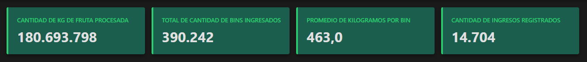
Total de Kilogramos: Suma todos los kilogramos de fruta ingresados durante el período analizado, sin importar especie, variedad o tipo de envase.
Total de Bins: Cuenta la cantidad total de envases (bins) utilizados en todos los ingresos registrados.
Promedio KG por Bin: Calcula cuántos kilogramos transporta cada bin en promedio. Se obtiene dividiendo el total de kilogramos por el total de bins.
Ingresos Registrados: Número total de viajes o cargas ingresadas a la planta. Cada registro representa una entrega individual con su información completa.
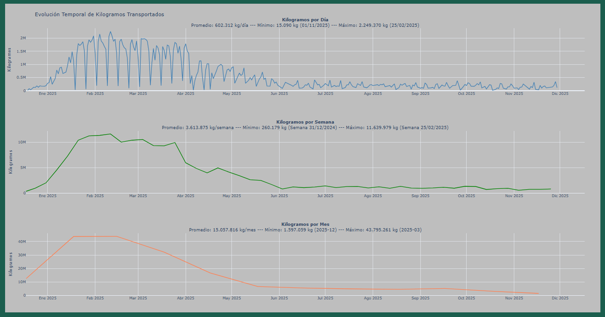
Esta sección presenta tres gráficos de línea que muestran la evolución de los kilogramos de fruta ingresados a la planta según diferentes períodos de tiempo: diario (azul), semanal (verde) y mensual (naranja). Cada gráfico incluye el promedio del período, el valor mínimo y máximo con sus fechas correspondientes, permitiendo identificar picos de actividad, patrones estacionales y planificar recursos operativos según la variabilidad temporal de los ingresos.
Distribución por Distancia de Transporte
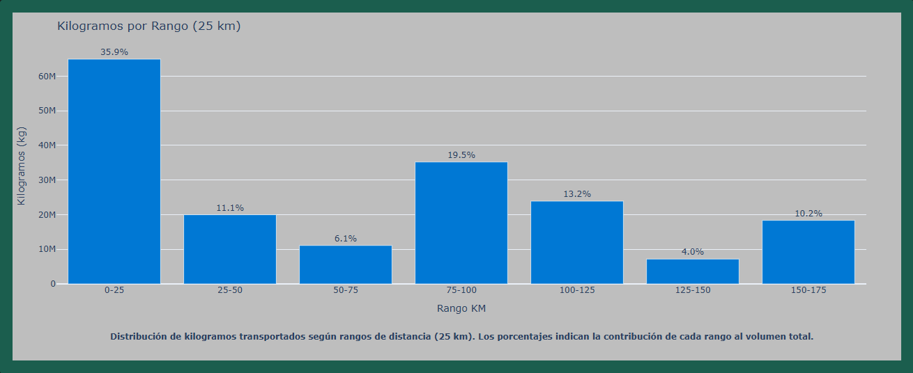
Este gráfico de barras segmenta los kilogramos transportados en rangos de 25 kilómetros de distancia, mostrando qué zonas geográficas aportan más volumen a la planta. Los rangos con mayor altura indican las áreas de mayor abastecimiento actual, mientras que los rangos con barras bajas revelan zonas con bajo aporte. Esta información permite identificar territorios desaprovechados y diseñar estrategias comerciales para captar nuevos productores en esas zonas o fortalecer relaciones con proveedores existentes que están aportando poco. Al conocer desde dónde proviene la mayor cantidad de fruta, se pueden dirigir esfuerzos de expansión hacia las regiones con potencial no explotado, equilibrando la matriz de abastecimiento geográfico y reduciendo la dependencia de pocas áreas.
Análisis por Especie y Variedad
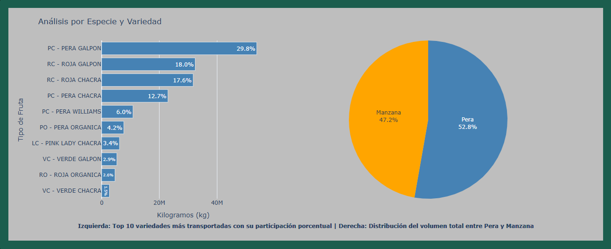
Esta sección combina dos visualizaciones complementarias. A la izquierda, un gráfico de barras horizontales muestra las 10 variedades de fruta más transportadas con su porcentaje de participación, identificando cuáles son los productos estrella en volumen. A la derecha, un gráfico circular compara la distribución total de kilogramos entre Pera y Manzana. Esta información permite evaluar la diversificación del portafolio de productos, identificar dependencias excesivas de ciertas variedades, y tomar decisiones sobre qué especies priorizar en estrategias comerciales, equilibrando el riesgo de concentración en pocas variedades.
Top 20 Orígenes por Kg
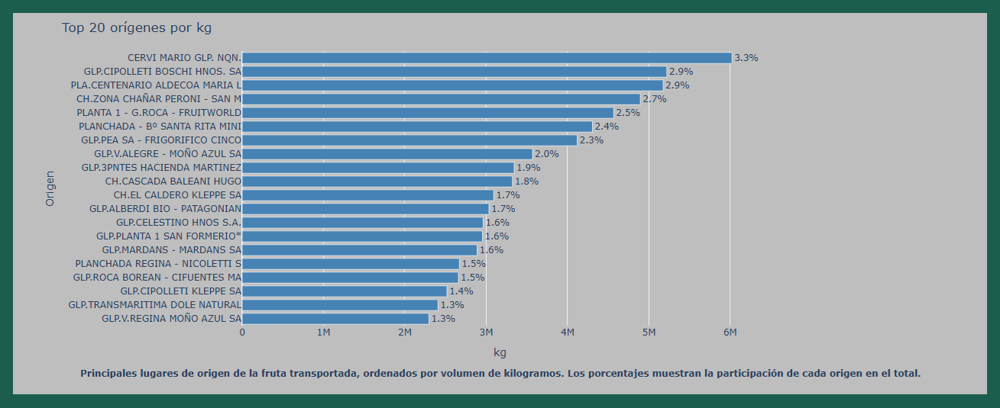
Este gráfico de barras horizontales presenta los 20 principales orígenes que más aportan al volumen total ingresado a la planta. Cada barra muestra la cantidad de fruta aportada por ese origen con su porcentaje de participación sobre el total. Es un simple registro de los orígenes que más contribuyen al volumen ingresado.
Participación por Tipo de Camión
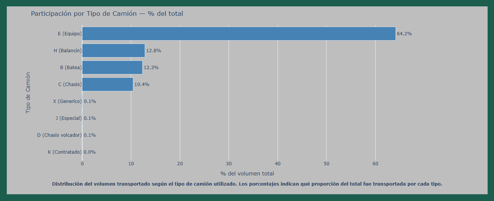
Este gráfico de barras horizontales muestra la distribución porcentual del volumen transportado según el tipo de camión utilizado. Cada barra representa qué proporción del total de kilogramos fue transportada por cada tipo de vehículo.
Segmentación de Productores por Volumen
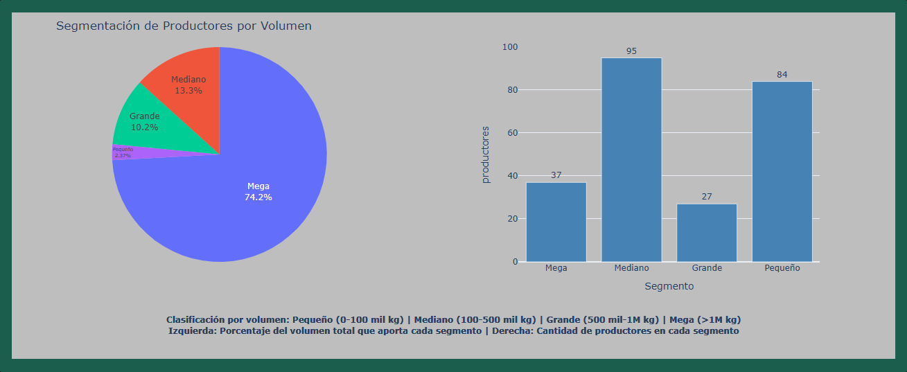
Esta sección clasifica a los productores en cuatro categorías según el volumen total de kilogramos aportados: Pequeño (0-100 mil kg), Mediano (100-500 mil kg), Grande (500 mil-1M kg) y Mega (más de 1M kg). El gráfico circular de la izquierda muestra qué porcentaje del volumen total aporta cada segmento, mientras que el gráfico de barras de la derecha indica cuántos productores pertenecen a cada categoría.